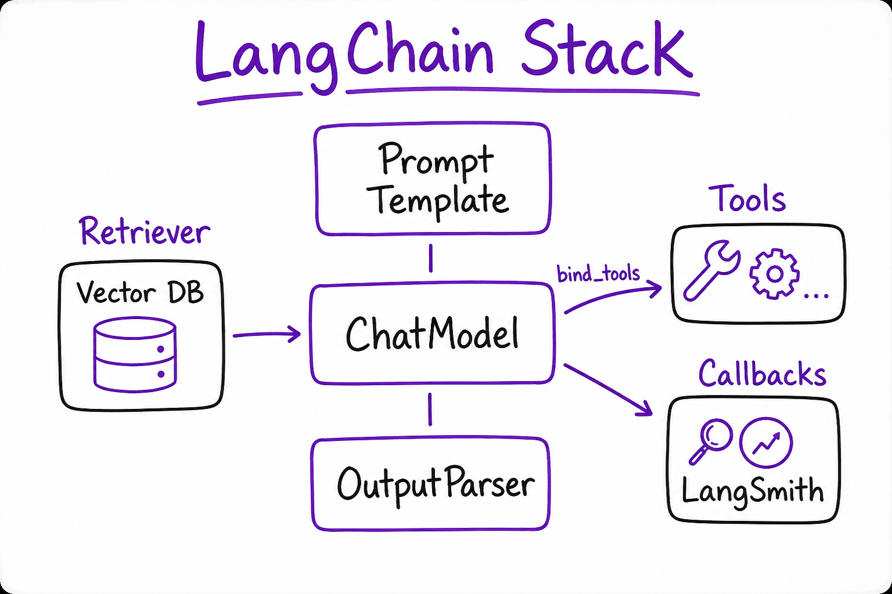
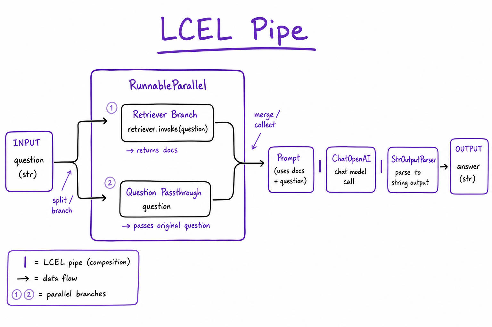
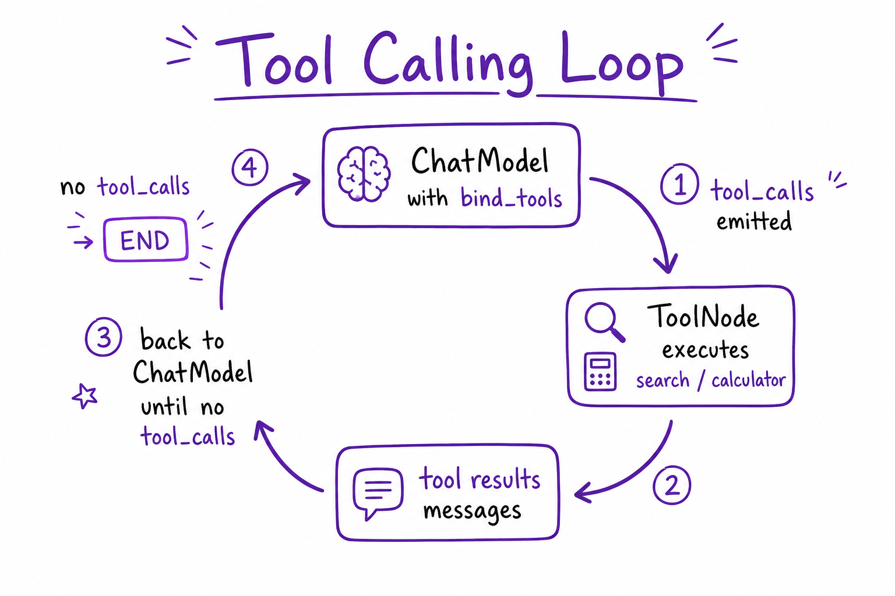

LangChain // AI Tech
Composable LLM framework: runnables (LCEL pipe), prompts, retrievers, tools, memory, and callbacks. The component layer most orchestrators (LangGraph, LlamaIndex integrations) build on.

LangChain stack: Prompt | ChatModel | OutputParser as LCEL chain; retriever feeds context; tools bound via bind_tools; callbacks → LangSmith traces.
01 — What & Why
LangChain standardizes LLM app primitives: models, prompts, parsers, retrievers, tools — as composable Runnable objects. Use LCEL (prompt | model | parser) for DAG pipelines; use LangGraph when you need cycles and checkpointing.
01a — Core Concepts
| Term | Definition | Gotcha |
|---|---|---|
| Runnable | Unit with invoke/stream/batch | Everything is a Runnable |
| LCEL | Pipe operator chains runnables | DAG only — no cycles |
| Retriever | get_relevant_documents(query) | Wrap vector DB |
| Tool | @tool decorated function + schema | Descriptions matter for routing |
01b — API Surface
from langchain_openai import ChatOpenAI
from langchain_core.prompts import ChatPromptTemplate
from langchain_core.output_parsers import StrOutputParser
prompt = ChatPromptTemplate.from_messages([
("system", "Answer from context: {context}"),
("human", "{question}"),
])
chain = prompt | ChatOpenAI(model="gpt-4o-mini") | StrOutputParser()
chain.invoke({"context": docs, "question": q})02 — When to Use / When NOT
| Case | LangChain? | Alt |
|---|---|---|
| Simple RAG chain | Yes | Direct API |
| ReAct agent loop | Maybe | LangGraph for control |
| Multi-agent crew | Maybe | CrewAI |
03 — Architecture
User Query -> Retriever (vector DB) -> format_docs
-> Prompt Template -> ChatModel -> Parser -> Answer04 — Deep Dive: LCEL

LCEL pipe: prompt | model | parser with parallel RunnableMap branches
LCEL supports RunnableParallel, RunnableLambda, fallbacks, and retries. Async via ainvoke.
05 — Deep Dive: Retrievers
Wrap vector DB with VectorStoreRetriever; configure search_kwargs top_k. Multi-query retriever expands queries via LLM.
06 — Deep Dive: Tools

bind_tools on ChatModel: model emits tool_calls, ToolNode executes, results fed back
llm_with_tools = llm.bind_tools([search, calculator]) # Use with LangGraph ToolNode or create_react_agent
07 — Deep Dive: Memory
ChatMessageHistory, ConversationBufferWindowMemory (legacy). Production: store messages in Postgres; pass history in invoke input — don't rely on in-process memory.
08 — Deep Dive: Callbacks
LangSmith auto-traces when env vars set. Custom BaseCallbackHandler for token logging. Tags: chain.invoke(..., config={"tags": ["prod"]}).
09 — Production & Ops
- Pin package versions — LC breaks often
- Prefer explicit chains over magic agents
- LangSmith for eval regressions
10 — Where It Shows Up
- LangGraph nodes use LC runnables
- LlamaIndex — overlapping scope
- RAG End-to-End
11 — Pitfalls
- create_react_agent black box — hard to debug
- Deprecated APIs in old tutorials
- Memory in serverless (lost between requests)